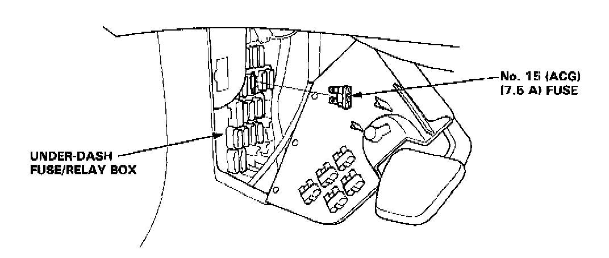

Without Scan Tool
HOW TO ERASE DIAGNOSTIC TROUBLE CODES WITHOUT A SCAN TOOLFinal Procedure (this procedure must be done after any troubleshooting)
1. Remove the Jumper Wire.
NOTE: If the Service Check Connector is jumpered, the MIL will stay on.
2. Do the ECM Reset Procedure.
ECM Reset Procedure
1. Turn the ignition switch off.

2. Remove the No.15 (ACG 7.5 A) fuse from the underdash fuse/relay box for 10 seconds to reset the ECM.
NOTE: Disconnecting the No.15 fuse also cancels the power seat setting.